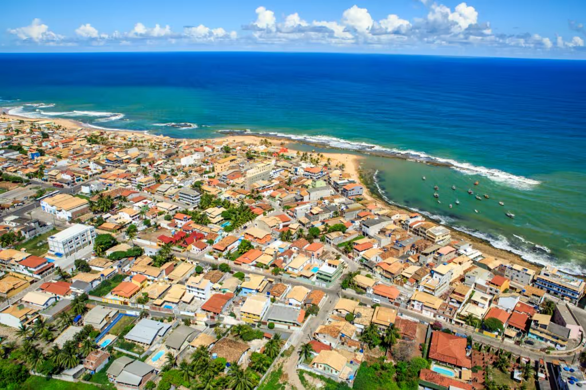

Welcome to Camaçari

Join the Chamber
56th National Convention
The event, the largest and most traditional in the commerce and services sector in the country
more infor...
Weather
24°C
Partly Cloudy
Wind Speed: 2.5 Km/h
Wind Chill: N/A
News Release
An action of Public Policies 4.0 (PP 4.0), an agreement signed between the National Confederation of Shopkeepers (CNDL) and the Brazilian Support Service for Micro and Small Enterprises (Sebrae). The project unites entities and members of the CNDL System and representatives of the public power in discussions around essential issues for the development of the retail sector in the country.
Discover how to be part of the Camaçari Chamer of Commerce and see how we can help your business grow.
Join Us
Recycling
Working for a more sustainable city.
Phone:+55 71 3017-2121
Transform Camaçari
An after-school program - training new entrepreneurs
Phone:+55 71 3017-2121
Build A Green City
Distribution of more than 3 thousand plant seedlings.
Phone:+55 71 3017-2121